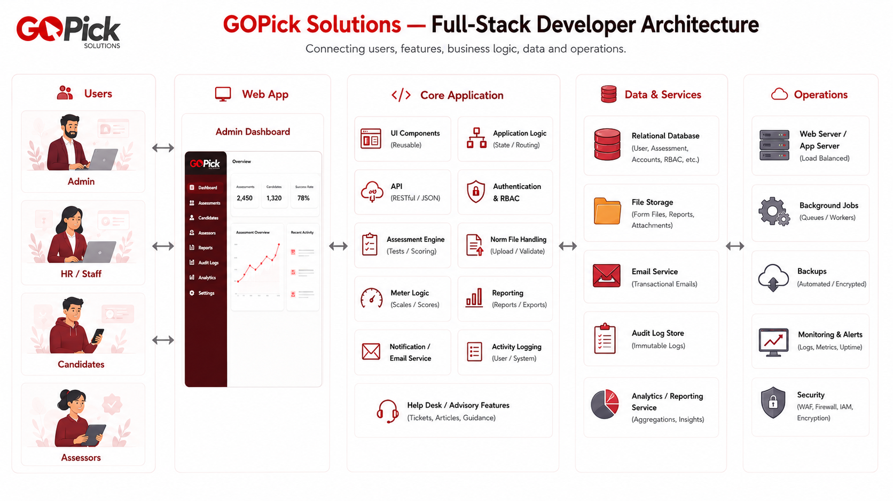
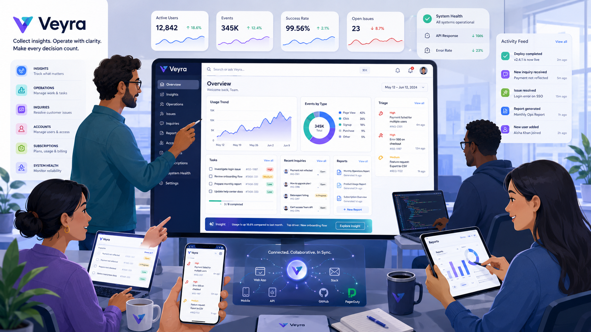

01
System Design & Technical Decisions
I frame decisions against system requirements and constraints, then document why an option was selected, what tradeoffs were accepted, and what operational consequences follow.
Full-Stack Developer
Development · Infrastructure · DevOps
I design and build with decisions that are deliberateDeliberateChoose from evidence and constraints, not habit.Current RolePeople Dynamics Inc. →, traceableTraceableKeep the reasoning behind important changes visible.Featured PlatformSeLeBox Platform →, and maintainableMaintainablePrefer systems that remain understandable as they change.Current RoleModernization Work →.
How I see connected systems
I approach software as a connected system, where application behavior, reliability, and operations influence each other. The goal is to make technical choices understandable, justified, and practical to maintain over time.
const approach = {
reliability: 'over novelty',
change: 'understand before modifying',
decisions: 'evidence + constraints',
debt: 'intentional + documented'
};Core Capabilities
01
I frame decisions against system requirements and constraints, then document why an option was selected, what tradeoffs were accepted, and what operational consequences follow.
02
I prioritize clarity and dependable behavior, favoring solutions that teams can reason about, modify safely, and support over time without unnecessary complexity.
03
I stay hands-on across application layers, from interfaces to backend behavior, while keeping implementation connected to deployment, operations, and long-term maintenance needs.
Experience
Nov 2025 — Present
People Dynamics Inc.
Modernized HR assessment systems using N-Layer architecture, environment feature controls, Docker standardization, and GitHub Actions to AWS EC2.
May 2024 — Aug 2024
YenkoDev — SeLeBox Platform
Implemented social platform capabilities including Follow relationships, Direct & Group Chat, continuous video feed with infinite scroll, and offline video caching.
Engineering Principles
Selected Case Studies
ContextPeople Dynamics Inc. · HR & Assessment Domain
Technical ProblemCoupled legacy PHP system with undocumented state transitions and fragile assessment scoring workflows.
Important DecisionEstablished an N-layer architectural boundary, decoupled core assessment modules, implemented environment feature toggles, and standardized Docker + GitHub Actions deployment to AWS EC2.
Outcome / ImprovementModularized assessment processing, zero-downtime deployment pipelines, and explicit engineering documentation (GoPick Manual).

ContextNyebe Creations Studio · Operations & Multi-Tenant SaaS
Technical ProblemDesigning a multi-tenant feedback platform requiring strict organization data isolation, fine-grained RBAC, sub-second QR code response times, and developer observability.
Important DecisionImplemented hybrid Clerk + custom app-layer RBAC authorization (Owner, Org Head, Member 1, Member 2), NeonDB Postgres connection pooling, Backblaze S3 media storage, and Sentry/PostHog observability.
Outcome / ImprovementSub-second QR response rates, isolated tenant boundary enforcement, non-destructive organization plan limits, and structured developer error monitoring.

About
I prefer reliability and clarity over novelty. I aim to understand a system before changing it, and I treat technical decisions as choices that should be justified by constraints, evidence, and long-term maintainability.
Outside Work
Secondary Technical Areas
I can work within existing systems, improve them incrementally, and make changes that respect compatibility, operational constraints, and maintainability.
I work across development and operational boundaries when needed, so application decisions remain practical to deploy, observe, and support.